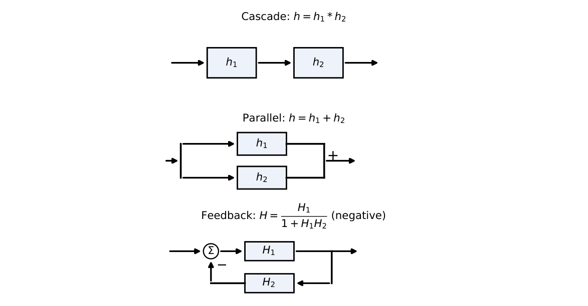
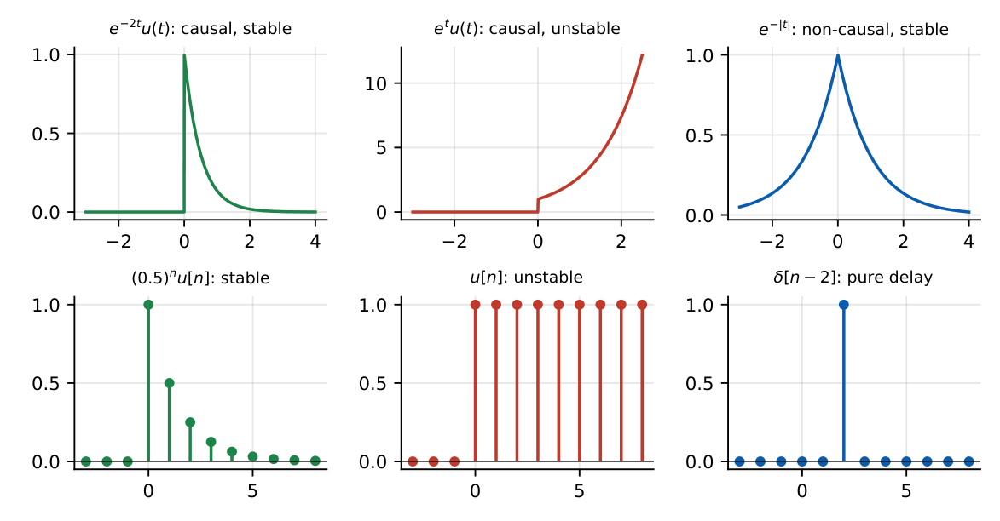
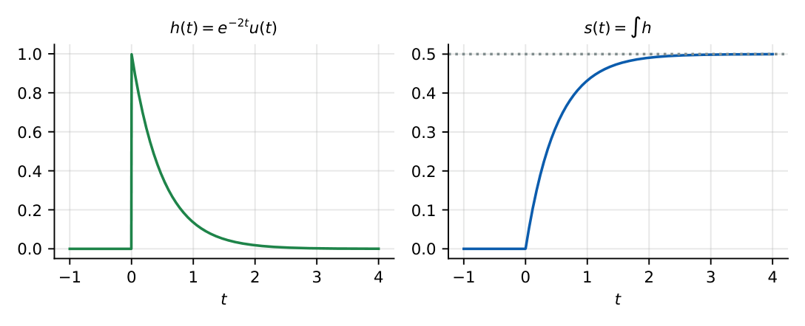

Linear Time-Invariant Systems
In this chapter
Classify a given input–output relation (linear? time-invariant? causal? stable? memoryless? invertible?), and read the properties off an impulse response. Every GATE paper has at least one such question.
16.1 System definition
A system maps an input signal to an output signal: \(y(t)=\mathcal T\{x(t)\}\) or \(y[n]=\mathcal T\{x[n]\}\). Interconnections: cascade (\(\mathcal T_2\{\mathcal T_1\{x\}\}\)), parallel (sum of outputs), feedback.

16.2 Continuous-time systems
Described by differential equations, e.g. \(\dfrac{dy}{dt}+ay=x\); the \(RC\) circuit is a first-order CT system.
16.3 Discrete-time systems
Described by difference equations, e.g. \(y[n]-ay[n-1]=x[n]\); digital filters and accumulators.
16.4 Linearity
\(\mathcal T\) is linear iff for all inputs and constants: \(\mathcal T\{ax_1+bx_2\}=a\mathcal T\{x_1\}+b\mathcal T\{x_2\}\) (additivity + homogeneity). Consequences: zero input \(\to\) zero output; an offset (\(y=x+2\)) makes a system non-linear (it is affine).
16.5 Time invariance
If \(x(t)\to y(t)\) then \(x(t-t_0)\to y(t-t_0)\) for every \(t_0\). Test: delay the input first and compute the output; separately delay the output; compare.
Time variance shows up as an explicit \(t\) (or \(n\)) multiplying \(x\), or a scale/reversal of the time axis inside the argument (\(x(2t)\), \(x(-t)\), \(x(t^2)\)), or modulation.
16.6 Causality
The output at time \(t_0\) depends only on inputs at \(t\le t_0\). Examples: \(x(t-2)\) causal; \(x(t+2)\), \(x(-t)\), \(x(2t)\) (at \(t>0\)) non-causal. An LTI system is causal iff \(h(t)=0\) for \(t<0\).
16.7 Stability
BIBO: \(|x|\le M_x\Rightarrow|y|\le M_y\). An LTI system is BIBO stable iff \(\displaystyle\int|h(t)|dt<\infty\) (\(\sum|h[n]|<\infty\)).
16.8 Memory and memoryless systems
Memoryless: the output at \(t\) depends only on \(x(t)\) at the same instant (e.g. \(y=x^2\), \(y=tx\)). A system with delay, integration, differentiation or a time argument other than \(t\) (even \(x(-t)\)) has memory. An LTI system is memoryless iff \(h(t)=k\delta(t)\).
16.9 Invertibility
A system is invertible if distinct inputs give distinct outputs: an inverse system exists. \(y=x^2\) is not invertible (\(\pm x\)), differentiation is not (loses the constant), \(y=x(t-2)\) is (advance by \(2\)), \(y=\int x\) is (differentiate), \(y=2x\) is. For LTI: \(h*h_{inv}=\delta\).
16.10 LTI system properties
An LTI system obeys both linearity and time invariance; its output for any input is the convolution with \(h\) (Chapter 17). Properties: commutative, associative, distributive. The response to \(e^{st}\) is \(H(s)e^{st}\): complex exponentials are eigenfunctions.
16.11 Impulse response and step response
\(h(t)=\mathcal T\{\delta(t)\}\), \(s(t)=\mathcal T\{u(t)\}=\displaystyle\int_{-\infty}^th(\tau)d\tau\), \(h(t)=\dfrac{ds}{dt}\).
DT: \(s[n]=\displaystyle\sum_{k=-\infty}^nh[k]\), \(h[n]=s[n]-s[n-1]\).
Causal iff \(h=0\) for negative time; stable iff absolutely integrable (summable); memoryless iff \(h=k\delta\).

\(h(t)=e^{-2t}u(t)\): \(\int|h|=\tfrac12\) (stable), causal, step response \(s(t)=\tfrac12(1-e^{-2t})u(t)\). \(h(t)=e^{-|t|}\): \(\int|h|=2\) stable, non-causal. \(h[n]=a^nu[n]\): \(\sum|a|^n=\dfrac1{1-|a|}\) stable iff \(|a|<1\).

16.12 Classification table
| System | Linear | TI | Causal | Stable | Memoryless |
|---|---|---|---|---|---|
| \(y=x(t-2)\) | Y | Y | Y | Y | N |
| \(y=x(2t)\) | Y | N | N | Y | N |
| \(y=x(-t)\) | Y | N | N | Y | N |
| \(y=t\,x(t)\) | Y | N | Y | N | Y |
| \(y=x^2(t)\) | N | Y | Y | Y | Y |
| \(y=x(t)+2\) | N | Y | Y | Y | Y |
| \(y=x(t)\cos\omega_ct\) | Y | N | Y | Y | Y |
| \(y=\displaystyle\int_{-\infty}^tx(\tau)d\tau\) | Y | Y | Y | N | N |
| \(y=\dfrac{dx}{dt}\) | Y | Y | Y | N | N |
| \(y[n]=x[n]+x[n+1]\) | Y | Y | N | Y | N |
| \(y[n]=x[n]\,x[n-1]\) | N | Y | Y | Y | N |
| \(y[n]=n\,x[n]\) | Y | N | Y | N | Y |
(i) A system with an additive constant is not linear even though its graph is a line. (ii) A time-scaling system such as \(x(2t)\) is time-varying although its rule looks “fixed”. (iii) \(y=x(-t)\) is non-causal and has memory, though it depends on a single sample. (iv) A causal system may still be unstable (integrator). (v) Differentiator is unstable in the BIBO sense (\(x=\sin t^2\) bounded, \(y\) unbounded).
Q1. \(y(t)=x(t)+2\) is (A) linear, TI (B) non-linear, TI (C) linear, TV (D) non-linear, TV.
Q2. An LTI system with \(h(t)=e^{-t}u(t+1)\) is (A) causal, stable (B) non-causal, stable (C) causal, unstable (D) non-causal, unstable.
Q3. \(y(t)=t\,x(t)\) is (A) TI, causal (B) TV, causal (C) TV, non-causal (D) TI, non-causal.
Answers: Q1 (B). Q2 (B): \(h\neq0\) for \(-1<t<0\) (non-causal); \(\int_{-1}^\infty e^{-t}dt=e\) is finite (stable). Q3 (B).
Q4. \(y(t)=\displaystyle\int_{-\infty}^{t}x(\tau)\,d\tau\) is (A) linear, TI, causal, stable (B) linear, TI, causal, unstable (C) non-linear (D) non-causal.
Q5. Two LTI systems with \(h_1=u(t)\) and \(h_2=\delta(t)-\delta(t-1)\) are cascaded. The overall impulse response is (A) \(u(t)-u(t-1)\) (B) \(\delta(t)\) (C) \(u(t)+u(t-1)\) (D) \(\delta(t)-u(t)\).
Answers: Q4 (B). Q5 (A): \(u*[\delta-\delta(t-1)]=u(t)-u(t-1)\) (a unit rectangle).
Q6. For \(h[n]=(0.5)^nu[n]\), \(\sum|h[n]|=\) .
Q7. For \(h(t)=e^{-2t}u(t)\), the step response at \(t\to\infty\) is .
Answers: Q6: \(2\). Q7: \(\int h=0.5\).
Q8. Which are true for a stable LTI system? (A) \(\int|h|dt<\infty\). (B) Poles in the LHP (for a causal system). (C) Bounded input gives bounded output. (D) \(h(t)\) must be zero for \(t<0\).
Answers: Q8: (A), (B), (C). (D) is the causality condition, not required for stability.
(i) Testing time invariance by delaying the output only. (ii) Assuming “stable” means “causal”. (iii) Treating \(x(t)+c\) as linear. (iv) Assuming an LTI system with a bounded \(h\) is stable (need absolute integrability).
T1. Classify \(y[n]=x[2n]\). T2. Find the step response for \(h[n]=\delta[n]+\delta[n-1]\).
Answers: T1: linear, time-varying, non-causal (at \(n=1\) needs \(x[2]\)), stable, memory. T2: \(s[n]=u[n]+u[n-1]\): \(0\) (\(n<0\)), \(1\) (\(n=0\)), \(2\) (\(n\ge1\)).
- Linear: superposition (\(y=x+2\) fails). TI: delay commutes. Causal: no future. Stable: BIBO. Memoryless: same instant only.
- LTI: causal \(\iff h=0\) (\(t<0\)); stable \(\iff\int|h|<\infty\); memoryless \(\iff h=k\delta\).
- \(s=\int h\), \(h=s'\); cascade \(h_1*h_2\); parallel \(h_1+h_2\).
- Explicit \(t\) factor or time scaling/reversal \(\Rightarrow\) time-varying.